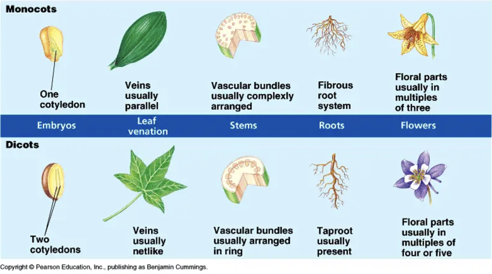

Produce flowers, which are the reproductive structures.
Seeds are enclosed within fruits, which develop from the ovary.
Double fertilization is a unique characteristic (one sperm fertilizes the egg to form the zygote, and another sperm fuses with the polar nuclei in the central cell to form the endosperm - food supply for seed).
Pollination can occur by wind, water, insects, birds, and other animals.
Dominant sporophyte generation.
Performs alternation of generations - featuring a diploid sporophyte generation and haploid gametophyte generation - alternating between the two generations in a cyclical manner.
Divided into two main classes:
Dicotyledonae (Dicots): Two cotyledons (seed leaves), net-like venation in leaves, taproot system, floral parts usually in multiples of four or five. Examples: Hibiscus, Mango, Bean.
Monocotyledonae (Monocots): One cotyledon, parallel venation in leaves, fibrous root system, floral parts usually in multiples of three. Examples: Rice, Wheat, Maize, Lily.l.

Important Terms to Know:
Vascular tissue: Xylem (transports water and minerals) and phloem (transports food).
Spores: Haploid reproductive cells that can develop into a new organism without fertilization.
Seeds: Mature ovules containing an embryo and stored food, enclosed by a protective coat.
Fruit: Mature ovary containing seeds.
Cotyledon: An embryonic leaf in seed-bearing plants, one or more of which are the first leaves to appear from a germinating seed.
Pollination: Transfer of pollen grains from the anther to the stigma.
Fertilization: Fusion of the male and female gametes.
Gametophyte: Haploid generation in the plant life cycle that produces gametes.
Sporophyte: Diploid generation in the plant life cycle that produces spores.
Alternation of Generations: The life cycle of plants that involves both haploid and diploid multicellular stages.